차기 벤치마킹 후보 리스트업
공개된 디자인 시스템 중에서 아직 벤치마킹하지 않은 23종을 추렸다.
각 시스템의 문서 사이트를 캡처해서 첫인상을 확인할 수 있게 했다.
캡처 일자: 2026-08-13 ·
방법: playwright chromium, 데스크톱 1440×900, 모바일 390×844 ·
재현: bash capture.sh (targets.txt 참고)
후속 작업: 1군, 2군 8종 소스 실측 완료 →
모바일 웹뷰 신규 DS 인사이트 ·
시스템별 상세는 systems/*.md
요약
후보는 5개 그룹, 23종이다. 저장소 지표는 2026-08-13에 GitHub API로 확인했다.
| 그룹 | 시스템 | 조직 | 라이선스 | 프레임워크 | ★ | 최근 푸시 | 상태 |
|---|---|---|---|---|---|---|---|
| A. 대형 프로덕트 | Base Web | Uber | MIT | React | 9.0k | 2026-07 | 양호 |
| Primer | GitHub | MIT | React, ViewComponent | 3.9k | 2026-08 | 양호 | |
| Atlassian DS | Atlassian | Apache-2.0(패키지별) | React | - | - | 부분 공개 | |
| Lightning DS 2 | Salesforce | BSD-3(SLDS 1) | CSS Blueprint | 3.7k | 아카이브 | 전환기 | |
| Canvas | Workday | Apache-2.0 | React | 357 | 2026-08 | 양호 | |
| Clarity | VMware | MIT 계열 | Angular, Web Components | 428 | 2026-08 | Angular 전용 | |
| Geist | Vercel | 문서만 공개 | React(비공개) | - | - | 코드 비공개 | |
| Semi Design | ByteDance | MIT(npm 표기) | React | 10.3k | 2026-08 | 양호 | |
| Mantine | 커뮤니티 | MIT | React | 31.6k | 2026-08 | 양호 | |
| PrimeReact | PrimeTek | MIT | React | 8.3k | 아카이브 | 재편기 | |
| B. 모바일 특화 | Ant Design Mobile | Ant Group | MIT | React | 12.0k | 2026-08 | 양호 |
| VKUI | VK | MIT | React | 1.2k | 2026-08 | 양호 | |
| NutUI React | JD.com | MIT(README) | React, Taro | 1.2k | 2026-08 | 양호 | |
| Varlet | 커뮤니티 | MIT | Vue 3 | 5.3k | 2026-08 | Vue 전용 | |
| Ionic | OutSystems | MIT | Web Components + 래퍼 | 52.6k | 2026-08 | 양호 | |
| Framework7 | 커뮤니티 | MIT | Core JS + 래퍼 | 18.7k | 2026-07 | 양호 | |
| Onsen UI | Monaca | Apache-2.0(README) | Web Components | 8.9k | 2026-06 | 활동 둔화 | |
| C. Tailwind 계열 | DaisyUI | 커뮤니티 | MIT | CSS 클래스만 | 42.1k | 2026-08 | 양호 |
| Flowbite | Themesberg | MIT(코어) | Tailwind + JS | 9.3k | 2026-06 | Blocks 유료 | |
| D. 공공 | GOV.UK DS | 영국 정부 | MIT(코드) | Nunjucks + SCSS | 1.4k | 2026-08 | 양호 |
| NSW DS | 호주 NSW 주정부 | MIT | HTML/SCSS/JS | 89 | 2026-08 | 양호 | |
| E. 국내·부분 공개 | Seed Design | 당근 | Apache-2.0 | React | 1.0k | 2026-08 | 양호 |
| ABC Def | LINE(LY) | Apache-2.0 | React, Vue, HTML/CSS | 106 | 2026-08 | 양호 |
제외한 시스템과 사유
| 시스템 | 사유 |
|---|---|
| Polaris, Carbon, Spectrum, Fluent | 이미 벤치마킹을 완료했다. systems/와 실측 리포트에 포함되어 있다. |
| Goldman Sachs DS | 문서 사이트가 사라졌다. design.gs.com이 goldmansachs.com 기업 홈으로 리다이렉트된다. 2026-08-13 확인. |
| Audi DS | CI 포털(audi.com/ci)이 전부 404를 반환한다. 2026-08-13 확인. |
| 29CM | 비공개다. 기술 블로그 아티클만 있다. |
A. 대형 프로덕트 계열 데스크톱과 반응형 웹 중심
Base Web
Uber벤치마킹 포인트: overrides 기반 커스터마이징 철학. 토큰 계층이 얇은 시스템과 기존 8종의 대비군으로 가치가 있다.
문서 · GitHub · 컴포넌트 갤러리의 회색 카드는 사이트 자체의 와이어프레임 썸네일이다.
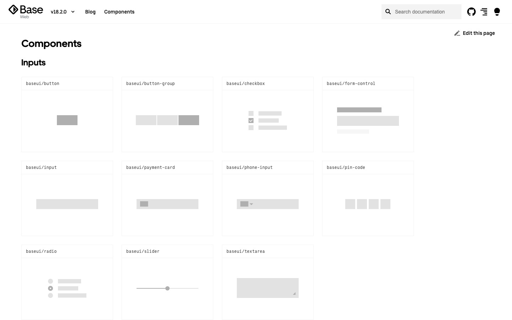
Primer
GitHub벤치마킹 포인트: 토큰 패키지(primer/primitives)를 컴포넌트와 분리해서 배포한다. 기존 파이프라인의 토큰 실측을 그대로 적용할 수 있다. Figma 공식 킷이 있다.
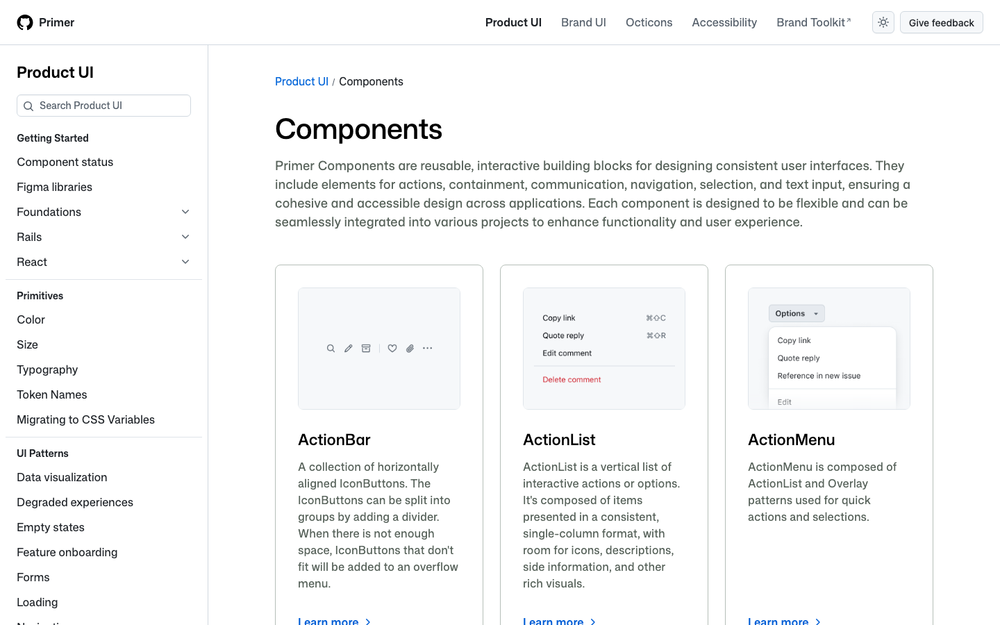
Atlassian Design System
Atlassian벤치마킹 포인트: @atlaskit/tokens 패키지가 공개되어 토큰 실측이 가능하다. 대규모 B2B 제품군(Jira, Confluence)의 컴포넌트 어휘를 볼 수 있다.
문서 · 소스는 npm 패키지와 공개 미러(atlassian-frontend-mirror)로 접근한다. 모노레포 원본은 비공개다.
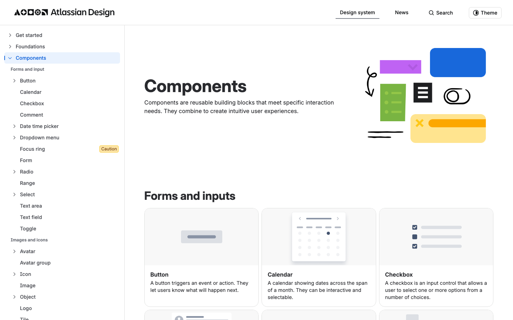
Lightning Design System 2
Salesforce벤치마킹 포인트: Page Layout Blueprint 문서화 방식. 컴포넌트가 아니라 페이지 구조를 HTML/CSS 청사진으로 배포하는 접근이 독특하다.
문서 · GitHub(아카이브) · 저장소가 2026년에 아카이브됐다. SLDS 2는 문서 중심으로 전환 중이다. 소스 실측 대상으로는 전환이 끝난 뒤가 안전하다.
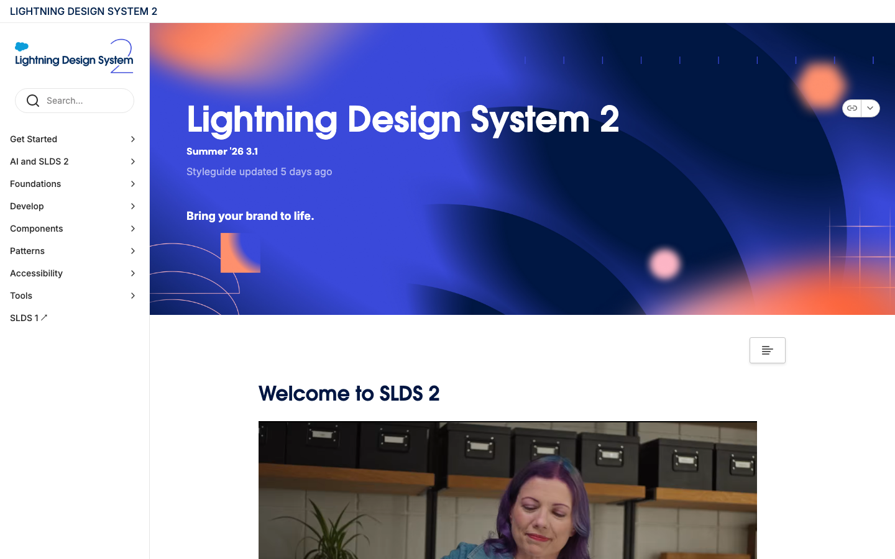
Canvas
Workday벤치마킹 포인트: 엔터프라이즈 HR 제품의 폼, 카드 목록, 승인 흐름 패턴. Components와 Patterns를 명시적으로 구분해서 문서화한다.
문서 · GitHub · 문서 사이트가 헤드리스 브라우저 UA를 차단한다. 캡처 시 UA 위장이 필요했다.
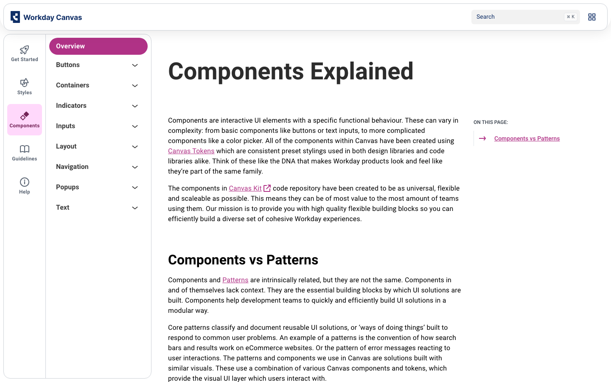
Clarity
VMware(Broadcom)벤치마킹 포인트: Wizard, Master-Detail 등 복잡한 입력 과정을 단계로 나누는 패턴 문서.
문서 · GitHub · Angular 전용이라 기존 비교군과 겹치는 축이 적다.
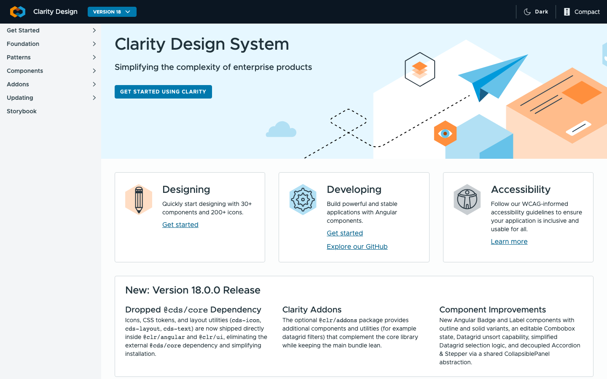
Geist
Vercel벤치마킹 포인트: 절제된 모바일 웹 패턴과 문서 UI 자체의 완성도. 다만 공식 컴포넌트 npm 패키지가 없다. 폰트와 아이콘만 오픈소스다.
문서 · 소스 실측 파이프라인에는 넣을 수 없다. 화면 참고용으로만 쓴다.
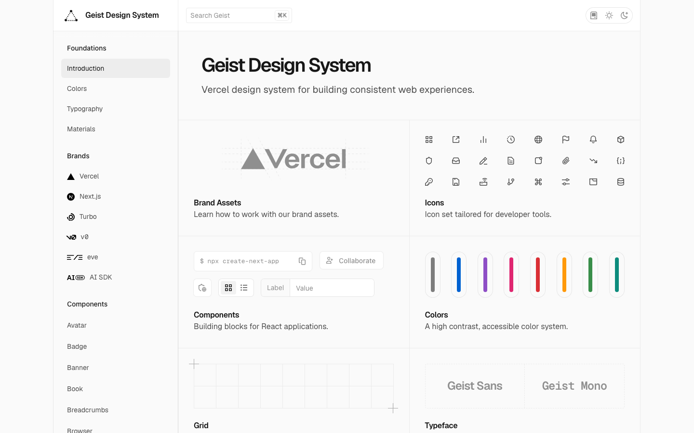
Semi Design
ByteDance(Douyin FE)벤치마킹 포인트: 디자인을 코드로 변환하는 D2C 도구를 시스템에 내장했다. Figma↔Code 매핑 충실도 관점에서 기존 8종과 다른 접근이다.
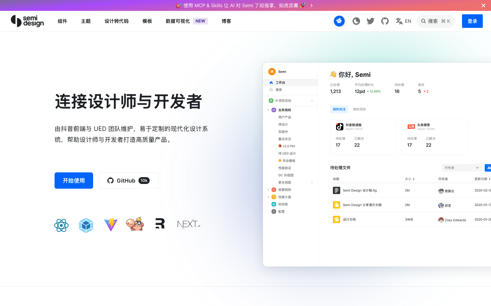
Mantine
커뮤니티벤치마킹 포인트: 100개가 넘는 컴포넌트와 CSS 변수 기반 토큰. 커뮤니티 주도 시스템의 어휘 팽창을 측정하기 좋은 표본이다.
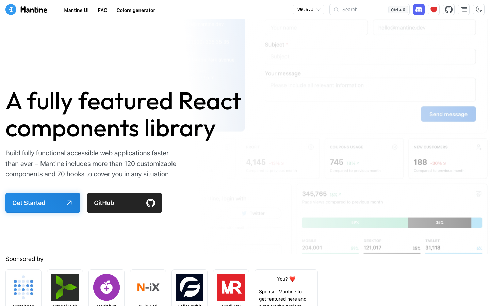
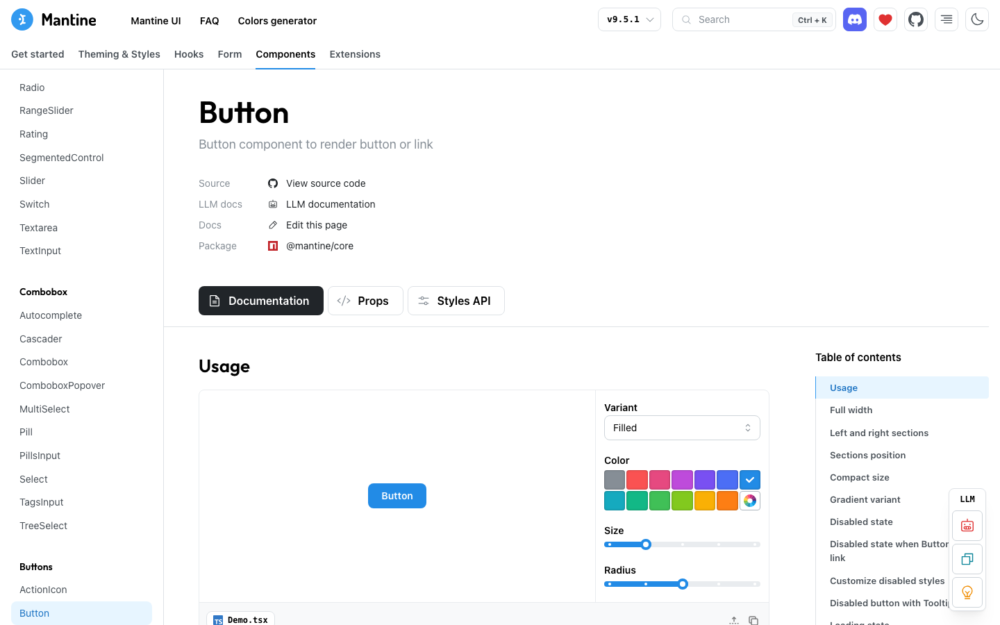
PrimeReact
PrimeTek벤치마킹 포인트: Styled, Tailwind, Headless 세 가지 스타일링 모드를 동시에 제공한다. 스타일링 접근법 축의 극단 표본이다.
문서 · GitHub(아카이브) · 사이트는 v11로 운영 중이다. 저장소 재편이 진행 중으로 보인다. 실측 전에 새 저장소 위치를 확인해야 한다.
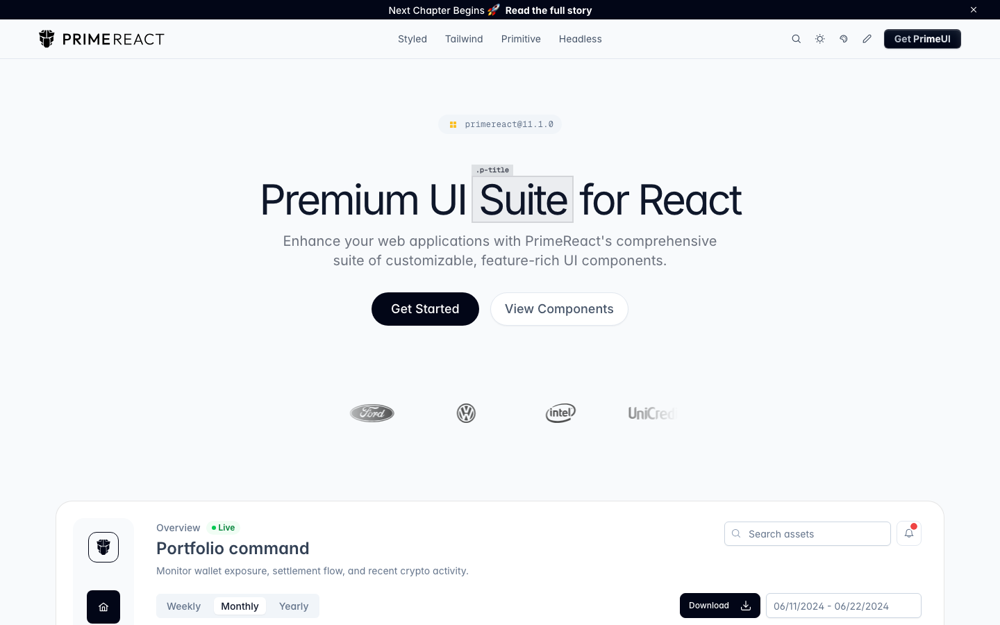
B. 모바일 특화 모바일 웹과 하이브리드 앱 전용
Ant Design Mobile
Ant Group벤치마킹 포인트: 이미 벤치마킹한 antd와 같은 조직의 모바일 전용 시스템이다. 데스크톱판과 모바일판의 어휘, 토큰 차이를 직접 비교할 수 있는 유일한 쌍이다.
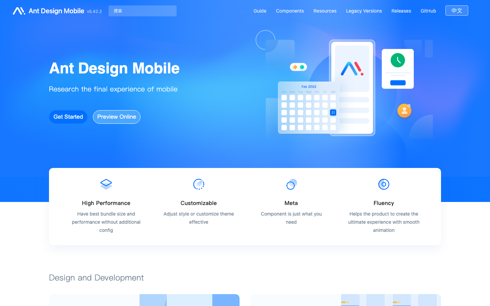
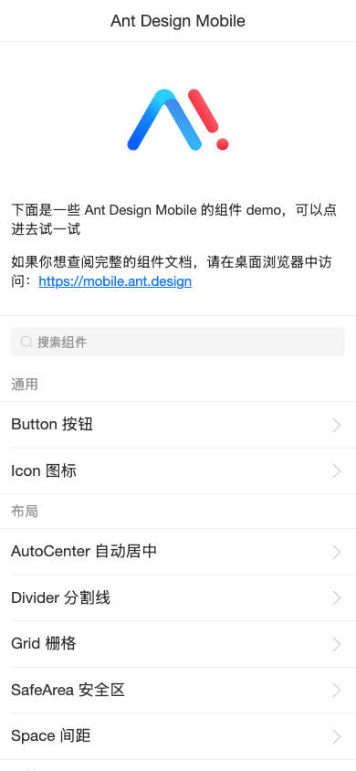
VKUI
VK벤치마킹 포인트: 피드, 메신저형 소셜 앱의 화면 계층(Epic, Root, View, Panel)을 컴포넌트로 강제한다. 앱 셸 구조를 시스템이 소유하는 드문 사례다. 토큰 저장소도 별도 공개한다.
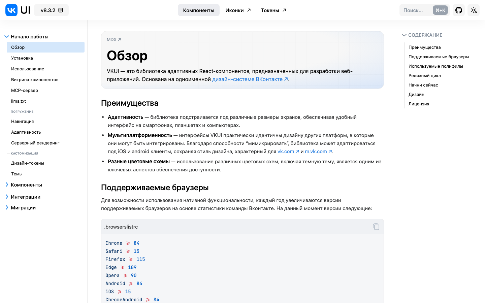
NutUI React
JD.com벤치마킹 포인트: 커머스 업무 컴포넌트(SKU 선택, 주소 입력, 카운트다운)를 시스템 어휘에 포함한다. 범용 컴포넌트와 업무 컴포넌트의 경계 사례다.
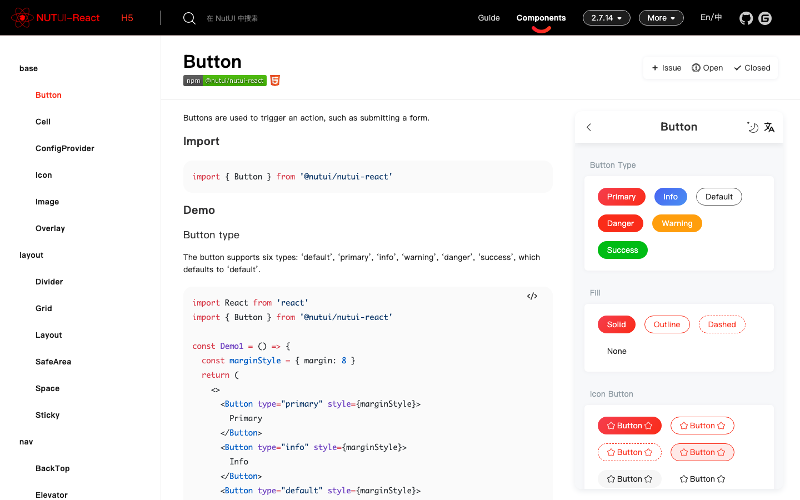
Varlet
커뮤니티벤치마킹 포인트: Material Design을 모바일 전용으로 재해석했다. 이미 벤치마킹한 Material(MUI, Material Web)과 삼각 비교가 가능하다.
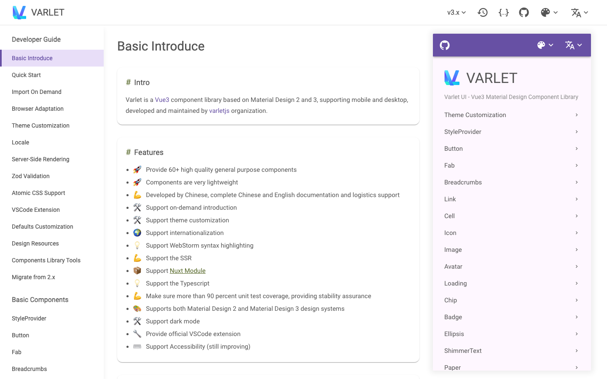
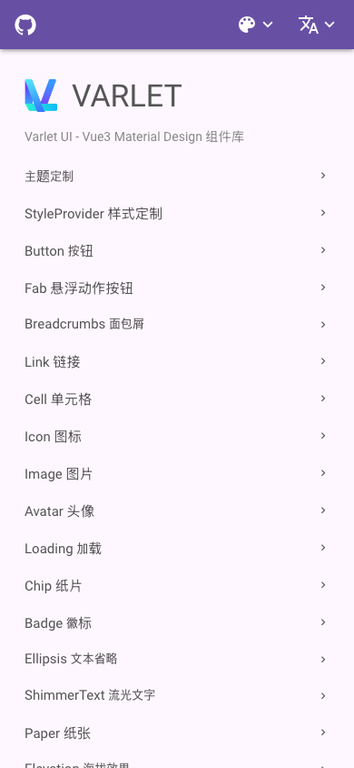
Ionic
OutSystems벤치마킹 포인트: iOS와 Android 테마를 하나의 컴포넌트가 런타임에 전환한다. 플랫폼별 변형을 variant가 아니라 mode로 푸는 접근이다.
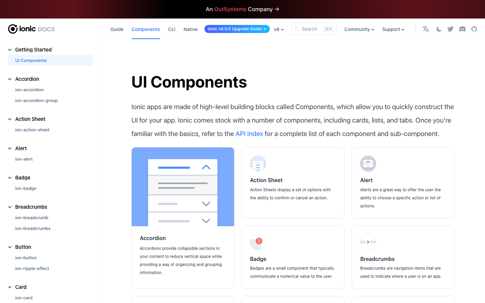
Framework7
커뮤니티벤치마킹 포인트: 메신저, 스와이프 리스트 등 화면 단위 복합 UI를 킷으로 제공한다. Kitchen Sink 데모로 전체 어휘를 한 번에 훑을 수 있다.
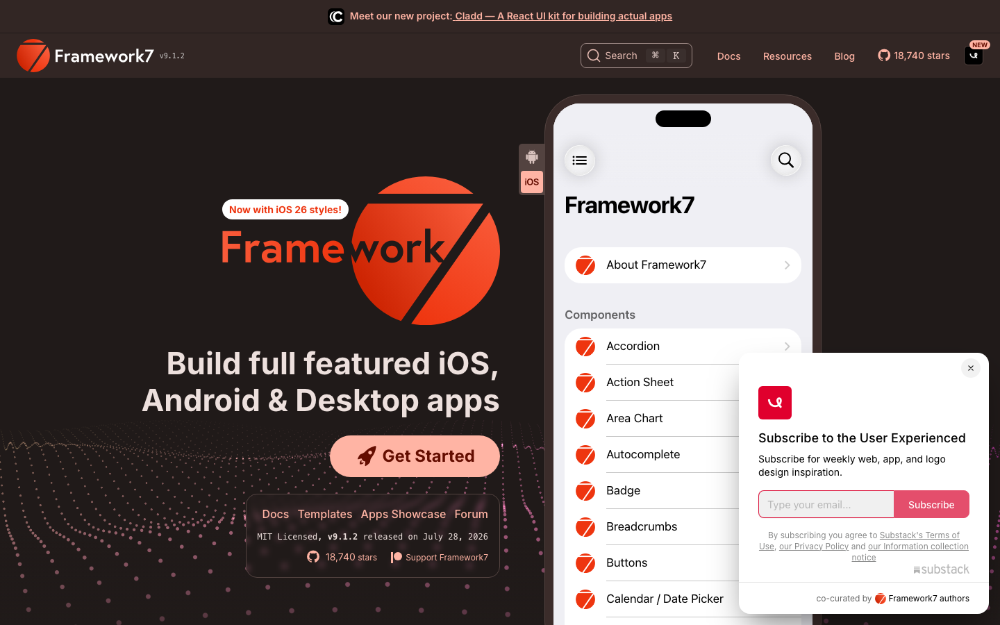
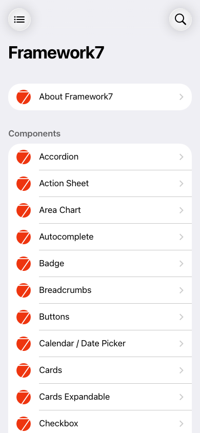
Onsen UI
Monaca벤치마킹 포인트: iOS/Android 스타일 자동 전환의 원조격 사례. 다만 릴리스 주기가 느려졌다(2.12.8).
문서 · GitHub · 우선순위를 낮게 두는 것이 안전하다.
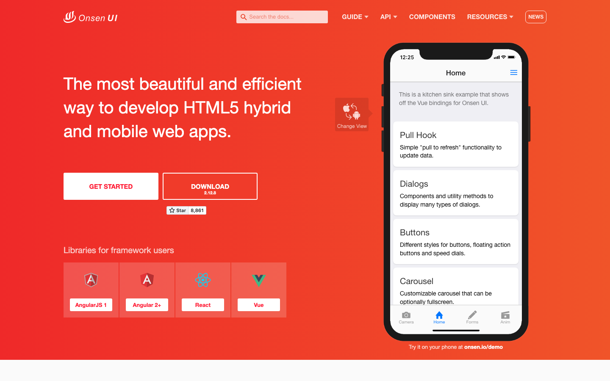
C. Tailwind 계열 유틸리티 클래스 기반
DaisyUI
커뮤니티벤치마킹 포인트: 유틸리티 클래스를 시맨틱 컴포넌트 클래스로 접는 방식. 컴포넌트 정의가 코드가 아니라 클래스 네이밍에만 존재하는 극단 사례다.
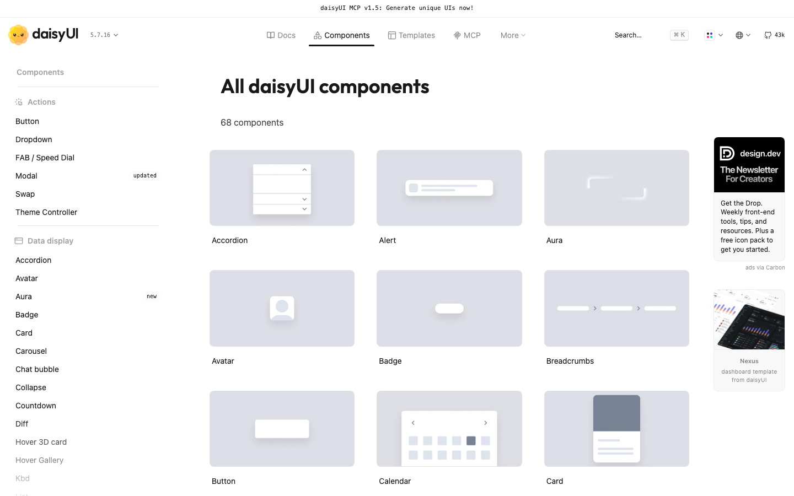
Flowbite
Themesberg벤치마킹 포인트: 컴포넌트 위에 Application UI Blocks 계층을 상품화했다. 페이지 블록 단위 재사용의 시장 검증 사례다.
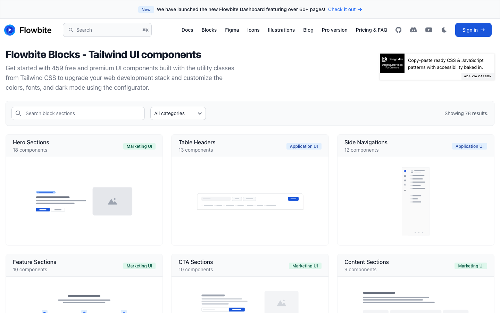
D. 공공 접근성과 폼 패턴의 표준
GOV.UK Design System
영국 정부벤치마킹 포인트: One question per page 폼 패턴과 접근성 문서화. 컴포넌트보다 Task Pattern이 시스템의 중심인 사례다.
문서 · GitHub · 프레임워크 독립적이라 토큰 비교는 제한적이다.
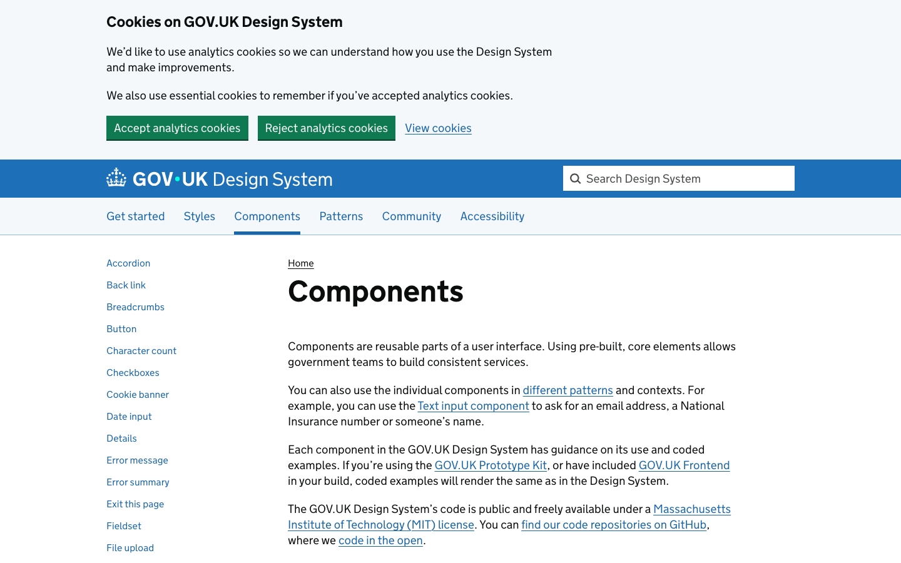
NSW Design System
호주 NSW 주정부벤치마킹 포인트: 검색 결과, 다단계 서식 등 페이지 템플릿까지 포함한 공공 시스템. GOV.UK 계열과의 유사도 비교가 흥미로운 지점이다.
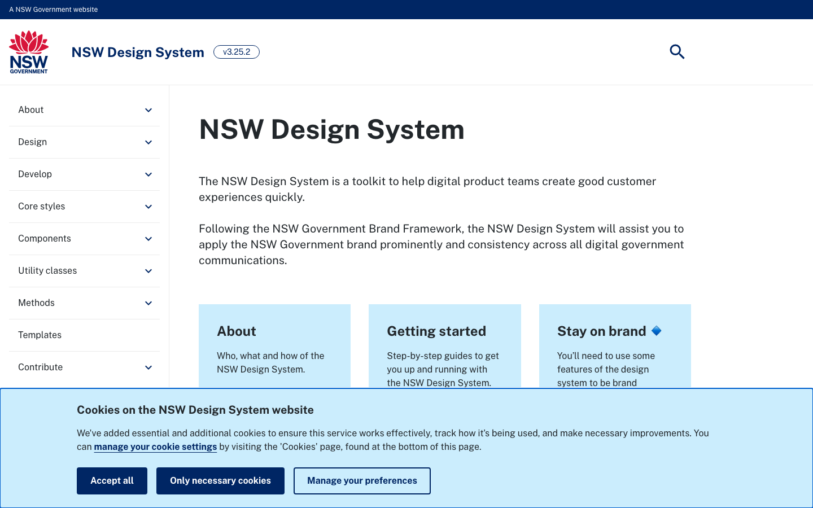
E. 국내·부분 공개 실무 참고 가치가 높은 쌍
Seed Design
당근벤치마킹 포인트: 국내 모바일 퍼스트 시스템 중 문서와 코드가 가장 넓게 공개된 사례다. Bottom Sheet, Action Button 등 모바일 어휘가 중심이다. 문서가 한국어다.
문서 · GitHub · 구 문서 도메인(designsystem.daangn.com)은 404다. seed-design.io가 현행이다.
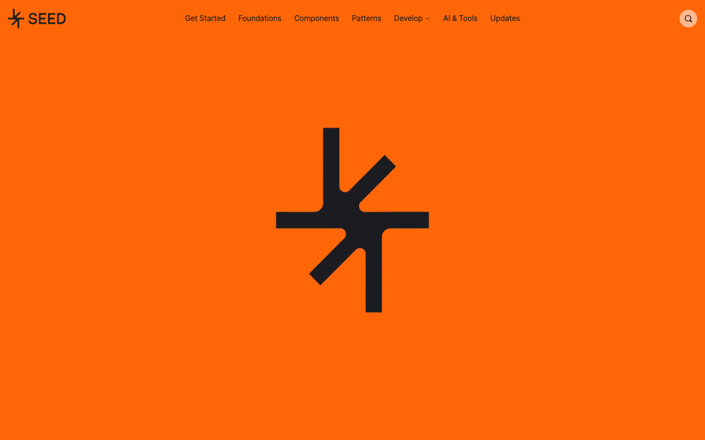
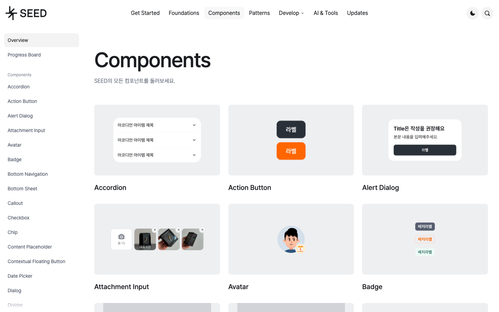
ABC Def
LINE(LY Corporation)벤치마킹 포인트: 3계층 토큰 구조와 Headless UI 조합을 명시적으로 내세운다. 컴포넌트 53종, v2.0.0. AI 친화 워크플로를 표방하는 신생 시스템이다.
문서 · GitHub · LINE 본체 앱의 코어 라이브러리와는 별개다.
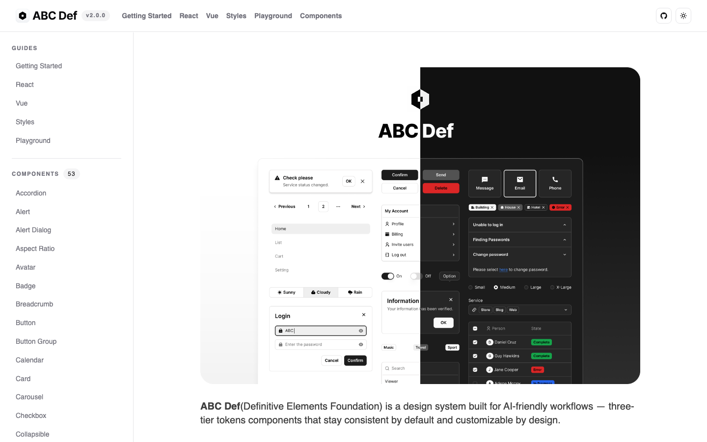
다음 단계 제안
기존 파이프라인은 소스 클론, 토큰 실측, Figma 대조 순서로 동작한다. 이 기준으로 후보를 나눴다.
| 우선순위 | 후보 | 근거 |
|---|---|---|
| 1군: 즉시 투입 가능 | Primer, Mantine, Base Web, Semi Design | React 소스와 토큰이 공개 저장소에 있다. 기존 8종과 같은 방법으로 측정할 수 있다. |
| 2군: 모바일 축 신설 시 | Ant Design Mobile, Seed Design, ABC Def, VKUI | 모바일 전용 어휘를 측정하는 새 축이 필요하다. antd와 antd-mobile은 같은 조직의 데스크톱·모바일 쌍이라 비교 가치가 가장 크다. Seed와 ABC Def는 국내 실무 참고 가치가 있다. |
| 관찰: 전환기 | SLDS 2, PrimeReact | 두 시스템 모두 저장소가 아카이브 상태다. 재편이 끝난 뒤에 실측해야 낭비가 없다. |
| 보류 | Geist(코드 비공개), Clarity(Angular), Varlet(Vue), Onsen(활동 둔화), Tailwind 계열, 공공 계열 | 파이프라인 전제(토큰 파일 + 컴포넌트 소스)와 어긋나거나, 측정해도 기존 결론에 새 축을 더하지 못한다. 화면 참고용으로만 쓴다. |
이 문서는 수기 작성물이다. analysis/standard-research/reports/의 생성물과 달리 직접 편집해도 된다.